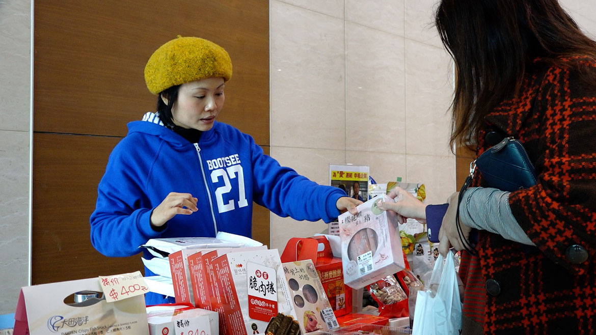

【企鵝坦白講—姐姐篇】
不需高富帥，我也想披嫁紗
「可能我已經失去媽媽，不想再失去二個弟弟吧，別人問我為什麼願意扛下擔子，沒有為什麼，他們就是我的家人呀！」邵淑華的母親在她國中時出現小腦萎縮症狀，不到幾年，就於她大學時過世。後來，小弟大弟都被檢查出小腦萎縮，她選擇放棄原有工作，回家帶著弟弟一起四處擺攤。
在她的印象中，母親不是一個溫柔的媽媽，「可能是因為生病，媽媽自己有很多情緒，但也因為這樣，家裡一直不是很平安，家人之間的關係也比較疏離。」
她坦言青春期時一直想逃離這樣的家，也真的如願離開故鄉新竹，考上台南的大學。直到母親在她大四那年離世，她才發現自己是那麼地愛家人。
她想起爸爸照顧媽媽的過去，「那時爸爸白天在餐廳當廚師，晚上還要出去擺攤賣香腸，才能負擔媽媽的醫藥費和我們三姊弟的生活費。」因為爸爸也是這樣付出，所以她對被迫離職沒有怨言，只是希望賺取生活費的同時，能讓弟弟因為接觸人群而延緩病程。
「應該說感謝疾病讓我們認識自己嗎？」因為疾病接觸信仰，有了信仰後，她不再那麼恐慌。現在的她只要開車，車上一定播放基督教聖歌，她說：「知道二個弟弟都被遺傳時，真的只能用走在死蔭幽谷來形容，若不是因為信仰，我們無法走下去。」
趕場擺攤之外，她仍會挪出時間帶弟弟去跟人分享，希望藉此鼓勵更多失意的人。「我很想告訴更多人，如果弟弟都可以，你們是不是也要試著站起來，勇敢面對。」
但女孩總會想要擁有一個自己的家吧？淑華有些害羞，「以前都覺得要什麼高富帥， 可是現在就回歸到希望有一個健康跟正常的家庭，只要能開心過日子，這樣就夠了。」
她也渴望穿上漂亮婚紗，有個幸福的小家庭，「目前我沒有對象，但是我相信上帝會幫我預備好。」她認真地強調，「真的，我不會對未來失去任何希望，也不想去擔憂。」
她轉頭問弟弟，「你說要怎麼樣？」弟弟建霖半天才用力吐出「信心」二字。她像在跟小孩說話般稱讚「對，要有信心，很棒」，她告訴自己也告訴弟弟：「我們就活在當下，珍惜每一天和身邊所有的人事物吧！」